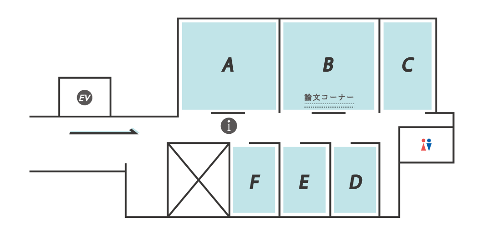
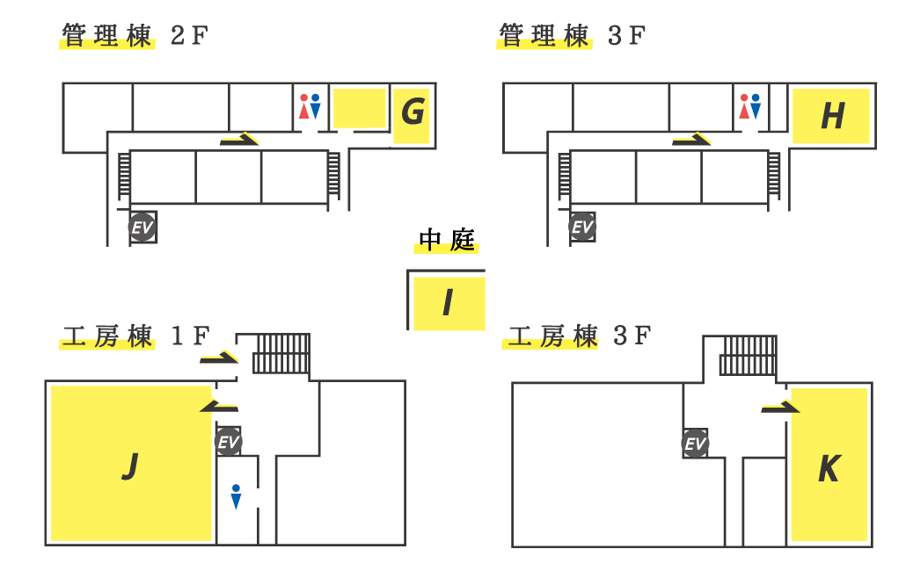
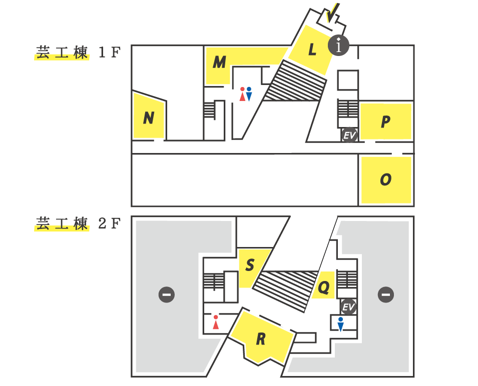
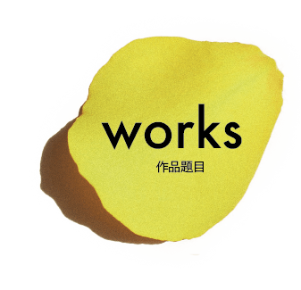
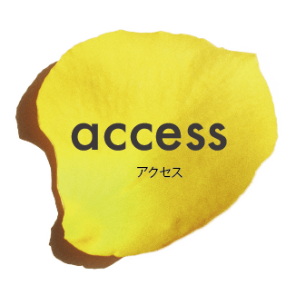
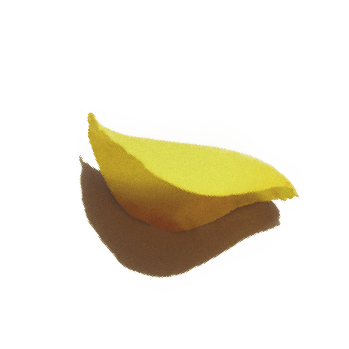
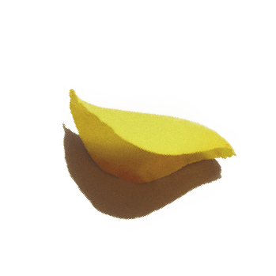
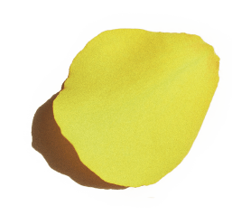
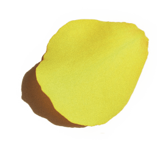

映像やアニメーション、コンピューターグラフィックス、プロダクトデザイン、
建築設計、まちづくりなど、さまざまなテーマを通して
現代社会と都市環境へのデザイン提案を目指した作品を展示します。
それぞれの個性をより引き出すため、今年は2会場に分かれます。
ぜひ両会場ともお越しください。
4年間の大学生活の中で、
学生自らが積み上げてきた成果をぜひご高覧下さい。







| 井上若奈 | 銭湯に住まう |
|---|
| 小坂莉世 | 選果場 |
|---|
| 浅井宏太 | 紬 -ツムギ- |
|---|
| 明石侑子 | だし街 交わり |
|---|
| 橋本玲子 | 複合施設 |
|---|
| 西岡康 | 都市と車と市場 |
|---|
| 竹村裕人 | 商店街×陶芸学校 |
|---|
| 坂田佳隆 | 祭り屋台と職人の博物館 |
|---|
| 美馬正尚 | 日本人と外国人、共存の社会へ |
|---|
| 東瑞貴 | 循環する仮設住宅 |
|---|
| 福島藍 | キャンパスデザイン |
|---|
| 磯貝実祐 | 沖縄県浦添グスクの想像復元 |
|---|
| 永安美穂 | にじむ、交わる |
|---|
| 大場美波 | 和紙工房 |
|---|
| 河合里奈 | 繭を紡ぐ小学校 |
|---|
| 渡辺桃子 | 縁巡る、味醂の町 |
|---|
| 牧村有花 | 橋に集う |
|---|
| 谷口礼佳 | いのちをつなぐいえ |
|---|
| 松本有史 | 街をつなぐ堀 |
|---|
| 野村隆太 | 山繁商店の保存計画 |
|---|
| 藤井智大 | 宮の渡しの艇溜所 |
|---|
| 村田諒 | 筋骨格モデルに基づいた新型ロボットアームの制作 |
|---|
| 藤森健太 | MRI対応新型ストレッチャーの制作 |
|---|
| 石榑華那子 | 腹腔部内視鏡手術用新型広視野トロッカーの制作 |
|---|
| 秋山陽太 | 新型・経肺インスリン薬投与デバイスの制作 |
|---|
| 松下実 | 救急救命士によるプレホスピタルケアデバイスの制作 |
|---|
| 二村龍太郎 | 歯科口腔外科用新型麻酔インジェクターの制作 |
|---|
| 首藤駿典 | 新しい靭帯損傷用膝装具の制作 |
|---|
| 若山博代 | 2020年代の学習用ハードウェアの制作 |
|---|
| 本間火詩 | 手製本によるアーティストのためのアートブックの制作 |
|---|
| 花井ゆうか | TOKYO Identity |
|---|
| 松本和馬 | Psycholarm |
|---|
| 小西良馬 | 水を利用して得られる音を用いた楽曲 |
|---|
| 周とう | コンピュータグラフィックスにおける三次元エフェクトの制作 |
|---|
| 清水歌菜 | Vueを使用した全天周画像 |
|---|
| 大下一 | Arnold Rendererによるレンダリング画像と実写画像の比較 |
|---|
| 原裕子 | プロシージャルテクスチャによる錯乱円の生成 |
|---|
| 片野真登 | 実写合成におけるグレアのシミュレーション |
|---|
| 西野葉子 | SKIN 〜 inside / outside 〜 |
|---|
| 横田美弥 | dancing dress |
|---|
| 太田拓 | 既存の実写映像をソースとしたジェネラティブ映像 |
|---|

| 小松原崚 | MusicaR |
|---|
| 杉山結 | VRHMDと触覚入出力デバイスを用いた次世代乙女ゲームのためのUXの制作 |
|---|
| 川瀬万由未 | ぐるぐる、ぱらぱら |
|---|
| 岡田夏実 | FORCE |
|---|
| 長谷川阿華把 | VRとニューロフィードバックによるマインドフルネス実践システム |
|---|
| 熊澤匡平 | そらいろキャンバス |
|---|
| 近藤綾音 | あぁ、恋がしたい！ |
|---|
| 山本和音 | 『Men ＆ Woman』ミュージックビデオ |
|---|
| 田中杏奈 | 危急存亡の秋です |
|---|
| 鈴村明花 | cycle |
|---|
| 吉田裕子 | Scene |
|---|
| 渡辺等子 | 揺 -光- |
|---|
| 松本直也 | crusing |
|---|
| 野又郁実 | 重水素濃縮装置模型 |
|---|
| 新美友菜 | 選択給水膜を用いた高効率光モーター |
|---|
| 深井剛 | Morphing Fingers |
|---|
| 森崎浩由 | TaM Session |
|---|
| 権藤真衣子 | インデックスマッチングと偏光を利用した制作 |
|---|
| 宮川風花 | 液体の屈折特性を利用した身体像の光学誘導型グリッチに関する制作 |
|---|
| 竹中ふう雅 | デジタル音源を用いた対位法楽曲 |
|---|
| 岩月真帆 | 図形を用いた漢字学習ツール |
|---|
| 中野瑳紀 | 愛知の伝統野菜に関するお土産商品 |
|---|
| 梅野愛彩華 | イラストのポーズ決定支援システム |
|---|
| 後藤充孝 | 映像の提示速度をトレッドミルでの歩行速度に同期させるプログラム |
|---|
| 石田早絵 | 自動車運転時における身体状態の可視化 |
|---|
| 森田智子 | 塗装作業動作を対象とした技能伝承のための可視化システム |
|---|
| 冨田梨沙 | handling |
|---|
| 志田帆歌 | プレパレーションを目的としたデジタルコンテンツのUIデザインに関する制作 |
|---|
| 犬塚茉実 | イヤホン難聴予防のための啓発Webサイト |
|---|
| 酒井ゆい | 使用感向上を目指したデリバリー注文サイト |
|---|
| 深町沙希 | ギフト用の柿右衛門の文様の提案 |
|---|
| 黛由紀子 | 店頭POPの色決定を支援するアプリケーション |
|---|
| 池田夏生 | 脳波による人のリラックス状態の可視化ソフトの制作 |
|---|
| 井原直将 | 山下まじかる相談部 |
|---|
| 下谷知美 | 粒子への地形要素の付着と遊離を考慮した浸食解析 |
|---|
| 牧野真澄 | 自分のイメージにあったフォント選択ツールの提案 |
|---|
| 水出悠斗 | メンタルモデルを考慮したプロダクト |
|---|
| 浜田結子 | 24memo |
|---|
| 黒田梨沙子 | 人間心理に着目したリストユーザーインターフェースの提案 |
|---|


〒461-0047
愛知県名古屋市東区大幸南1-1-10 カルポート東 3F
地下鉄名城線「ナゴヤドーム前矢田」下車 1番出口南へ徒歩5分
ゆとりーとライン「ナゴヤドーム前矢田」下車 南へ徒歩3分
市バス「大幸」下車 徒歩5分（名駅15号系統、 東巡回系統）

〒464-0083
愛知県名古屋市千種区北千種2丁目1番10号
市バス「清明山」下車 徒歩4分
基幹バス「萱場」下車 徒歩1分
© 2017 名古屋市立大学 芸術工学部 芸術工学研究科 卒業・修了制作展


 



 
